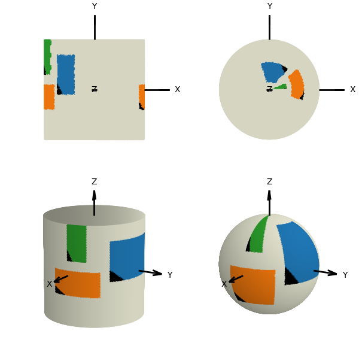
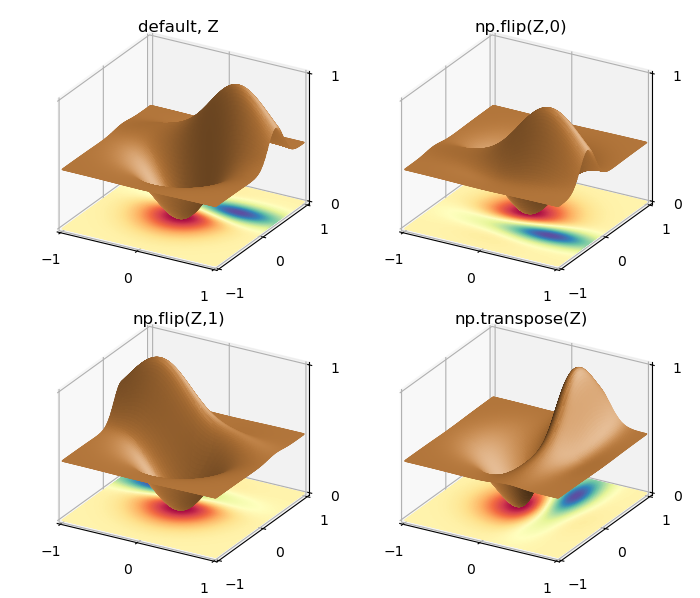

Image and Datagrid Mapping¶
Several surface object methods are provided to set the surface geometry or color using data sources. The data controlling these two surface features is either in the form of an image or a datagrid. Although they are different datatypes, they both are data values in an NxM array of ‘rows and columns’. Whereas datagrid values are scalars, image values are color tuples.
The four methods are summarized in the following table:
| map_Method | Feature | Data | Aux. control | Viewport | Scale |
|---|---|---|---|---|---|
| color_from_image | color | (r,g,b) | Yes | no | |
| cmap_from_datagrid | color | scalar | cmap (1-> 3) | Yes | no |
| geom_from_image | displacement | (r,g,b) | cref (6-> 1) | Yes | Yes |
| geom_from_datagrid | displacement | scalar | Yes | Yes |
The table categories are further described in the following sections. These 2-dimensional data sets are mapped to the 3D surfaces based on native coordinate transformations. As a result, the methods are restricted to surface objects prior to any geometric mapping.
Viewport Mapping¶
The surface coordinate domains are given in the following table.
| Data domain | Width | Height |
|---|---|---|
| Planar | X [ -1, 1 ] | Y [ -1, 1 ] |
| Polar | θ [ 0, 2π ] | r [ 1, 0 ] |
| Cylindrical | θ [ 0, 2π ] | z [ -1, 1 ] |
| Spherical | θ [ 0, 2π ] | φ [ 0, π ] |
Mapping to sub-sections of the surface domains is available using the ‘viewport’ parameter for each method. If the name parameter viewport is not defined, the image is mapped over the entire surface. Simple examples not using the viewport are given in Spherical Image Mapping and Polar and Cylindrical Image Mapping.
The viewport argument is an array of length 4, indicating the subdomain of the surface domain to which the image or datagrid data is mapped. The array element values are in the range [0,1] and are multiples of the native coordinate domain spans. The first two elements indicate the position placement of the data lower left. The last two elements are the position placement of the data upper right.
| Color | Start | End | Viewport | ||
|---|---|---|---|---|---|
| position | left | bottom | right | top | |
| blue | 0.13 | 0.45 | 0.30 | 0.85 | [0.13, 0.45, 0.30, 0.85] |
| orange | 0.95 | 0.30 | 0.10 | 0.55 | [0.95, 0.30, 0.10, 0.55] |
| green | 0.00 | 0.65 | 0.06 | 1.00 | [0.00, 0.65, 0.06, 1.00] |
The upper table lists three viewport examples. These are then used to map to planar, polar, cylindrical and spherical surfaces. The plots are shown below. The lower left corner of the subdomains have been colored black to indicate orientation.
Using a viewport is demonstrated in the examples Mapping to a Viewport and Function and Image Mapping for images and Datagrid Mapping to a Viewport for a datagrid. The python script Viewport Example, which was used to generate the above four plots, is given at the end of this guide.
Image Mapping¶
The image origin for width and height is at the lower left corner of an image. Currently, only Portable Graphic Format, png, are supported for image files.
Color¶
The method to map surface object color from an image is:
surface.map_color_from_image(fname, viewport=None)
where the fname parameter is the image file to read, with viewport defined in the above section. Each face is assigned the values based on the face center coordinate mapped to a pixel of the image. The RGBA values of the pixel are then assigned to face color. The result is that each surface triangular face has a uniform color. Therefore, this method restricts the resolution of the image on the surface to the rez of the surface object.
Geometry¶
The color value of an image pixel may be used to set the displacements of vertex coordinates in the direction normal to the ‘fixed’ coordinates of the surface object.
| Surface | Fixed Coordinate |
|---|---|
| Planar | z = 0 |
| Polar | z = 0 |
| Cylindrical | r = 1 |
| Spherical | r = 1 |
Displacement magnitudes are based on the vertex coordinate mapped to a pixel of the image. The color values of the pixel are then used to calculate displacement magnitude of the vertex coordinate. The object method to apply this image mapping is:
surface.map_geom_from_image(fname, scale=1.0, viewport=None, cref='v', hzero=0)
The cref string argument sets which color component is used to calculate the displacement magnitude. The magnitude range is [0,1], which is scaled using the scale argument. One of six color components are set by cref: red, green, blue, hue, saturation or value, with value being the default. The hue component is cyclic. If hue is used, ‘h’, then hzero sets the zero reference which is in the range of [-1,1]. The default value is 0, corresponding to red. Positive and negative values of hzero will set the cyclic direction of hue.
An example of using an image for displacements is Image Geometric Mapping
Datagrid Mapping¶
A datagrid is a N X M float array with origin at [0,0]. The height and width dimensions correspond to N and M respectively. The order of the values correspond to monotonically increasing values of the height and width dimensions. Considering the datagrid from the Matplotlib 3D wireframe plot example, the following plots were generated for different ordering of the NxM dimensions.
Datagrid order changes were made using the Numpy flip and transpose methods. The python script Datagrid Example, which was used to generate the above four plots, is given at the end of this guide which demonstrates both surface coloring and geometry derived from the datagrid.
Color¶
The method for applying surface color based on datagrid values is:
surface.map_cmap_from_datagrid(datagrid, cmap=None, viewport=None)
where datagrid and viewport have been previously defined and cmap is simply the colormap applied to the normalized datagrid values.
Geometry¶
The method for applying surface vertex displacements based on datagrid values is:
surface.map_geom_from_datagrid(datagrid, scale=1.0, viewport=None )
where datagrid and viewport have been previously defined and scale is a multiplier applied to the normalized displacements. The displacements are normalized as [0,1] for the datagrid minimum to maximum. Once a datagrid is applied to the surface, the minimum and maximum values are obtained using the surface dictionary property:
surface.bounds['vlim']
This is an array of min and max values. This property was used in the Geometric and Color Datagrid Mapping 2 example to scale the colorbar.
The initial planar surface coordinates are normalized as [-1,1]. Scaling of these coordinates can be easily obtained from the x,y, datagrid arrays by using the method:
surface.scale_dataframe(x,y,datagrid)
as was done in the Vertical Colorization example.
Python Script¶
Viewport Example¶
Rendering time is slowest for image mapping. Reduce rez for initial demonstration.
import numpy as np
from matplotlib import pyplot as plt
import s3dlib.surface as s3d
#.. Viewport Comparison Plot
# 1. Define functions to examine ....................................
def color_surf(surface) :
vpBlue = [0.13, 0.45, 0.30, 0.85]
vpOrange = [0.95, 0.30, 0.10, 0.55]
vpGreen = [0.00, 0.65, 0.06, 1.00]
surface.map_color_from_image('data/C0b_color.png',viewport=vpBlue)
surface.map_color_from_image('data/C1b_color.png',viewport=vpOrange)
surface.map_color_from_image('data/C2b_color.png',viewport=vpGreen)
surface.shade(0.5,direction=[0,1,1])
return
# 2. Setup and map surfaces .........................................
rez=6
surf = [None]*4
surf[0] = s3d.PlanarSurface(rez+1, basetype='oct1', facecolor='beige')
surf[1] = s3d.PolarSurface(rez+1,basetype='hex', facecolor='beige')
surf[2] = s3d.CylindricalSurface(rez,facecolor='beige')
surf[3] = s3d.SphericalSurface(rez,facecolor='beige')
# 3. Construct figure, add surfaces, and plot ......................
fig = plt.figure(figsize=(6,6) )
minmax = (-0.9,0.9)
for i in range(len(surf)) :
surface = surf[i]
ax = fig.add_subplot(2,2,i+1, projection='3d')
s3d.standardAxis(ax, length=1.5, offset=1,negaxis=False)
ax.set(xlim=minmax, ylim=minmax, zlim=minmax)
if i < 2 : ax.view_init(90,-90)
else : ax.view_init(15,30)
color_surf(surface)
ax.add_collection3d(surface)
fig.tight_layout()
plt.show()
Datagrid Example¶
import numpy as np
import matplotlib.pyplot as plt
from matplotlib.ticker import LinearLocator
from mpl_toolkits.mplot3d import axes3d
import s3dlib.surface as s3d
#.. Datagrid Order Comparison Plot
# 1. Define function to examine .....................................
X, Y, Z = axes3d.get_test_data()
Z_arr = [ Z, np.flip(Z,0), np.flip(Z,1), np.transpose(Z) ]
titles = [ 'default, Z', 'np.flip(Z,0)', 'np.flip(Z,1)', 'np.transpose(Z)' ]
# 2 & 3. Construct surfaces, figure, add surface, plot ..............
rez=6
fig = plt.figure(figsize=(7,6))
for i in range(4) :
surface = s3d.PlanarSurface(rez, color='peru', basetype='oct1')
surface.map_geom_from_datagrid( Z_arr[i] ).shade().hilite(.5)
base = s3d.PlanarSurface(rez, cmap='Spectral', basetype='oct1')
base.map_cmap_from_datagrid( Z_arr[i] )
ax = fig.add_subplot(2,2,i+1,projection='3d')
ax.set(xlim=(-1,1), ylim=(-1,1), zlim=(0,1) )
ax.xaxis.set_major_locator(LinearLocator(3))
ax.yaxis.set_major_locator(LinearLocator(3))
ax.zaxis.set_major_locator(LinearLocator(2))
ax.set_proj_type('ortho')
ax.set_title( titles[i], fontsize='large')
ax.add_collection3d(surface)
ax.add_collection3d(base)
fig.tight_layout()
plt.show()